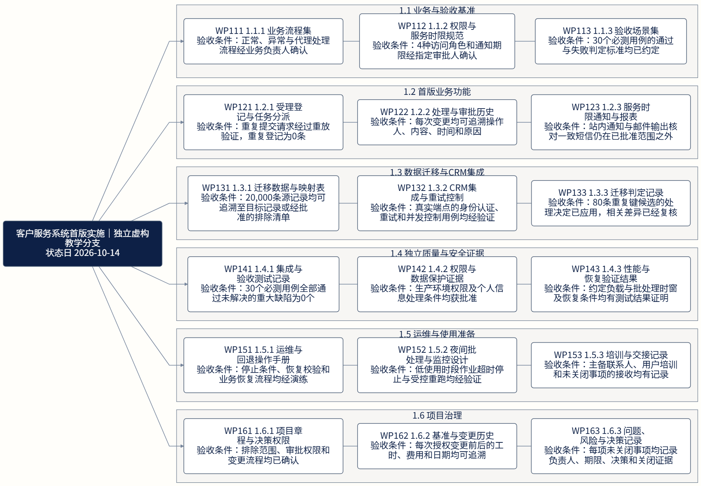
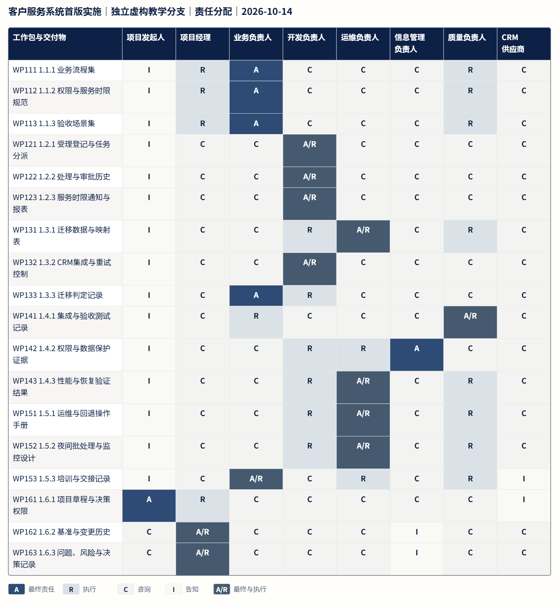
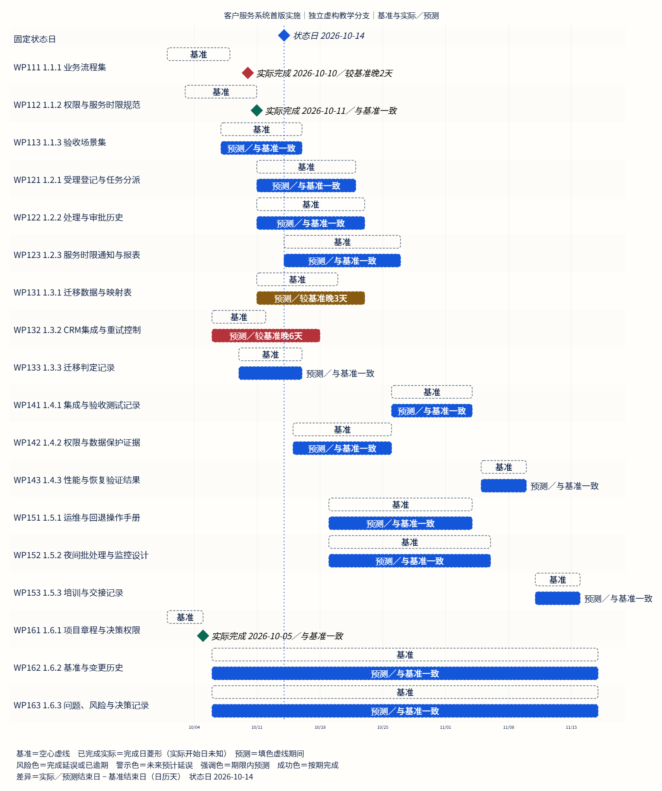

Kobo PM · 项目材料更新包
客户服务系统首版实施｜独立虚构教学分支
状态日：2026-10-14。让项目经理专注判断、沟通与交付。
本页是所提供项目事实的静态视图；验收条件、预测日期和待决事项均不代表已获批准。
18工作包
3已记录完成
3结束日期较基准晚
1待决事项
周报摘要
截至 2026-10-14，3 / 18 个工作包记录为完成。1 个未完成工作包已超过基准结束日。
行动项
暂无记录。
需要 PM 推进的决定
- DEC-01 短信是否纳入首版：尚待范围、资源与授权决定
依赖时间冲突
暂无记录。
工作分解与验收
每个工作包均带验收条件。包含关系不表示执行顺序。



责任分配
A 最终责任 · R 执行 · C 咨询 · I 告知 · A/R 最终与执行



项目日程
基准、实际完成日和预测分别显示。实际开始日未知，完成项仅显示完成日菱形。预测变化不会改写批准基准。


